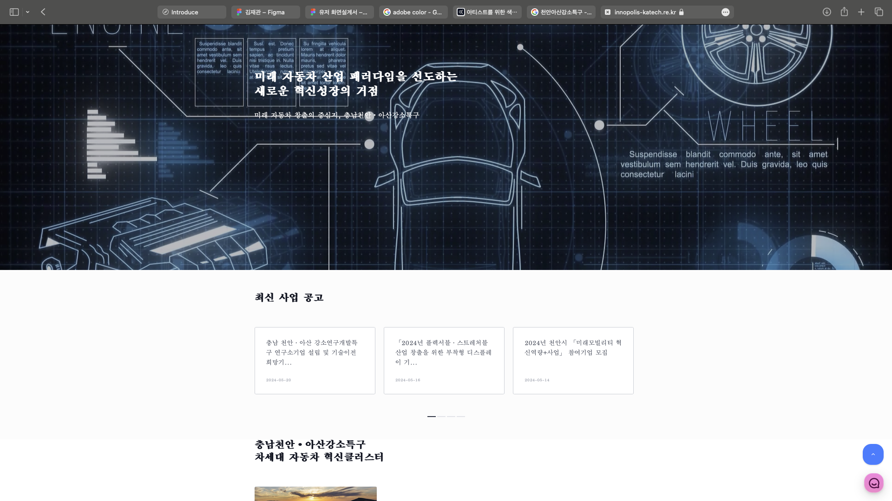

"최근 제가 관심있게 바라보고 있는 주제는 [디지털 취약 계층 키오스크 소외 문제]입니다"
최근 늘어난 인건비를 줄이기 위해 수 많은 곳에서 키오스크를 도입하기 시작했습니다.
하지만 아날로그에 익숙한 노인들에게 키오스크라는 기계장치의 등장은 그리 달갑지 않습니다.
디지털시대에 살아가고 있는 우리들조차 가끔 어렵게 느껴지는 키오스인데, 노인들은 적어도 2배 이상의 진땀을 흘려야 할 것입니다.
세상은 더 빠르게 발전해 나아갈 것이 분명합니다. 오늘 배우는 기술이 내일이면 더 발전되어 있을 것이고, 우리는 매일 공부해야 살아남을 수 있을겁니다.
우리가 디지털을 배우는만큼 그들에게도 디지털에 대한 교육이 필요하고, 또 적응할 시간이 필요합니다.
더하여, 디지털 취약 계층이 키오스크를 사용할 때는 조금 더 기다려주고, 또 도움의 손길을 내밀어보는 것도 좋을 것 같습니다.
"프로젝트에서 기술적으로 가장 어려웠던 문제는 [센서 관련 문제]였습니다"
[프로젝트 개요] 고등학생시절, 지팡이에 아두이노와 센서를 활용하여 시각장애인을 위한 보조기구 만드는 프로젝트를 진행했습니다.
아두이노에 초음파 센서 및 컬러센서 등 다양한 센서를 연결하여 사용하였고, 이를 안드로이드 어플을 제작하여 제어했습니다.
[어려웠던 점] 당시에는 하드웨어에 관한 지식이 많지 않았던터라, 진행을 하며 센서를 태워먹는 일이 많았습니다.
그렇기에 당시 센서들을 많이 사서 무언가 안된다 싶으면 바꿔가며 사용하려고 했습니다.
다만 여기서의 문제는 센서가 문제인지, 아두이노 접지의 문제인지, 아니면 안드로이드 어플의 문제인지 파악에 시간이 너무나 오래 걸렸다는 점입니다.
시간은 한정되어있고, 센서의 개수도 한정되어 있던 터라 센서의 안전도 확보하면서 오류 유무를 빠르게 파악할 수 있는 방법이 필요했습니다.
[해결방법] 우리는 문제를 해결하기 위해 두가지 방향으로 계획을 잡았습니다.
1. 당시 사용하고 있던 아두이노 나노보드의 전압과 센서들이 필요로 하는 전압을 확인하여 적절하게 연결할 것
2. 적절하게 연결했다면, 아두이노와 센서에는 문제가 없는 것으로 판단하고 해당 보드를 활용하여 어플을 개발할 것
해당 프로세스를 이행하면서 필요한 다른 파츠들의 부품들을 3D프린터로 빠르게 뽑아내어 결과물을 만들어낼 수 있었습니다.
물론 지금와서 생각해보면 당연한 이렇게 하는 것이 당연한 것일지도 모르겠으나, 당시에는 해당 부분에 대한 지식도 없었고 프로세스에 대한 이해도 또한 적었기에 어려웠던 기억으로 남아있습니다.
[결과] 당시 고등학생이었던 저는 기술에 대한 이해도가 적었고, 소프트웨어 프로세스에 대한 이해도 또한 적었습니다.
팀이 어떤 문제에 닥쳤을 때, 이를 해결하는 문제 해결 능력을 이를 통해 조금이나마 배울 수 있었던 것 같습니다.
"그래서 저는, 서비스 기획자 김재관입니다"

작년 1년간 휴학을 하며 여러 외주를 진행하며 PM업무를 간접적으로나마 배워보았습니다.
먼저, 요구사항명세서를 보고 화면설계서를 그리는 방법을 터득하였습니다. 이러한 결과는 여러 외주 작업을 통해 배우게 되었으며, 이를 통해 여러가지 업무 프로세스를 깨닫게 되었습니다.
[천안아산강소특구] 사이트의 화면설계서를 그리고, QA를 보면서 클라이언트와 개발자들 사이에서 어떤 자세를 취해야 하는지 알게되었고
[한국기술마켓] 사이트의 화면설계서를 그리며 클라이언트의 요구사항을 어떤식으로 반영해야하는지 또한 알게되었습니다.
고등학생 시절, 여러 해커톤 대회를 나가서 기획자로서 팀의 방향성을 잡고 유기적으로 엮어 상을 타기도 했습니다.
이러한 경험들을 통해 직접 해커톤을 기획하여 운영해보기도 하였으며, 해커톤 운영을 해본 경험으로
직접 다니고있던 고등학교에 적용해 해커톤 대회를 운영해보기도 하였습니다.
STAC이라는 대회에서는 IoT분아로 출전해 아두이노와 센서들을 활용하여 안드로이드를 통해 제어하는 프로젝트를 팀원들과 수행했으며,
이러한 과정을 통해 팀원들과 유기적으로 소통하는 방법을 배울 수 있었습니다.
"제가 현재 관심있는 기업은 마이리얼트립 입니다."
"Travel Everyday"
마이리얼트립은 Travel Everyday라는 비전 아래, 누구든 나다운 여행을 할 수 있는 다양한 여행 서비스를 제공하며, 우리 삶에서 여행의 즐거움을 더 자주 느낄 수 있는 세상을 만들어가고 있습니다.
"더 자주 경험하는 여행의 즐거움"이라는 비전으로 여행을 좋아하는 수많은 사람들의 동기를 불러일으키고,
여행의 여러 고민들을 대신 해결해주는 서비스를 만들어가는 기업입니다.